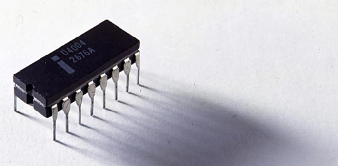

První čipy
Před 50 lety se stala historicky významná událost: světlo světa spatřil první čip, který by se dal označit za
mikroprocesor. Vyvíjela ho od roku 1969 tehdy ještě nepříliš významná firma Intel, a to na zakázku japonské
společnosti Busicom pro její programovatelné kalkulačky.
Společnost Intel představila před 15. listopadu 1971 první univerzální mikroprocesor. Ten byl součástí
čtyřčipového setu označovaného jako MCS-4. Tato miniaturní křemíková destička, která obsahovala všechny
základní součásti, jež lze u procesorů nalézt i dnes. Skládal se z procesorové jednotky (CPU), což byl právě
pradědeček mikroprocesorů Intel 4004, dále zde byl čip nepřepisovatelné paměti (ROM) pro vlastní aplikační
programy, operační paměť (RAM) pro zpracování dat a v neposlední řadě čip pro řízení (I/O) portu.

Významné 8bitové procesory
Po Intel 4004 později následoval Intel 8008, první 8bitový procesor. Tyto procesory jsou předchůdci tržně
úspěšného Intel 8080, Zilog Z80 a odvozené 8bitové procesory Intel 8bit.
Konkurenční architektura Motorola 6800 byla klonována a vylepšena firmou MOS Technology pod názvem MOS
Technology 6502, čímž soupeřila s popularitou Z80 v osmdesátých letech.
Z80 i 6502 se soustředily na nízkou cenu, dosaženou díky kombinaci malého pouzdra a jednoduchými požadavky na
sběrnici a integrované obvody. Ty byly poskytovány jako oddělený čip (např. Z80 obsahoval paměťový kontrolér).
Byly to právě tyto vlastnosti, které umožnily start „revoluci“ domácích počítačů na začátku osmdesátých let,
která nakonec produkovala polo-užitečné stroje za 99 USD.
Motorola představila osmibitový procesor MC6809 v srpnu 1974. Jiný z prvních 8bitových procesorů byl Signetics
2650, vyráběný společností stejného jména.
Výchozí návrh mikroprocesoru ve světě vesmírného letu byl RCA 1802 od Radio Corporation of America (též známy
jako CDP1802, RCA COSMAC), který NASA použila v programu vesmírných sond Voyager a Viking v sedmdesátých
letech a na palubě sondy Galileo na Jupiter (1989–1995). CDP1802 byl použit proto, že má velmi nízkou spotřebu
a protože jeho výrobní proces zajišťoval lepší ochranu proti kosmickému záření a elektrostatickým výbojům než
jakýkoli jiný procesor té doby; proto se o 1802 hovoří jako o prvním procesoru se zvýšenou odolností vůči
radiaci.